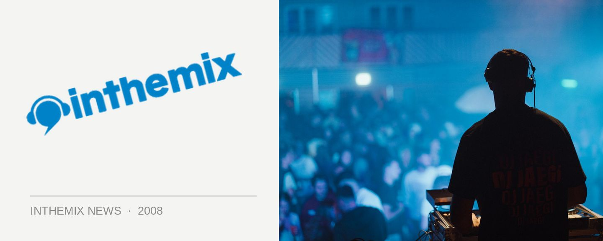

Armin vs. Ferry: "Never say never"
One of the big (and happy) surprises of the New Year party season was the shock announcement that world #1 DJ Armin van Buuren would be in Australia during the first weekend of January, to perform at the Summafieldayze and Summadayze festivals in the Gold Coast and Perth respectively. It was also the source of plenty of speculation as to whether he’d make dance music history and get behind the decks with fellow Dutch trance icon Ferry Corsten, who’d already been announced to play at the events. So what are the chances that Perth and QLD crowds will be witnessing an epic ‘Armin vs. Ferry’ set this January?
ITM posed the question to Ferry recently when we had him on the phone. “I think people have the idea that, after the spontaneous thing that happened with me and Tiesto at Dance Valley, that I would do that now with everybody,” he laughed, fanning the flames of any expectation that it’s definitely going to happen. “But it is really a thing of the moment. You’re there at the festival, you have a drink together and it can take off from there.”
At this point in time, nothing is set in concrete. “I can say that there’s nothing really planned. But never say never.” So punters can look forward to the possibility of a bit of ‘back to back’ action this 3rd and 4th of January. “I won’t rule it out, but I won’t confirm it either. We’ll leave it up to the moment.”
Check out part 1 of ITM’s interview with Ferry Corsten, and stay tuned for part 2 later this week. And have a peek below at the results from when the two Dutch masters last collaborated together…
For more info on all the party action happening over summer, check out ITM’s Festival Pages for more news, features, clips and DJ mixes that you could possibly ever hope for!